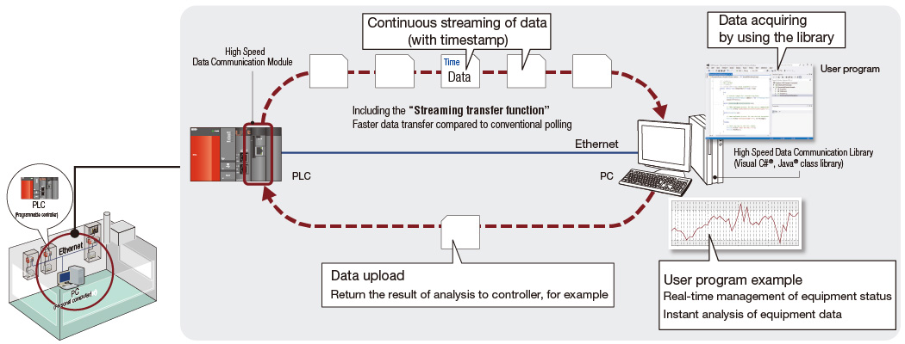
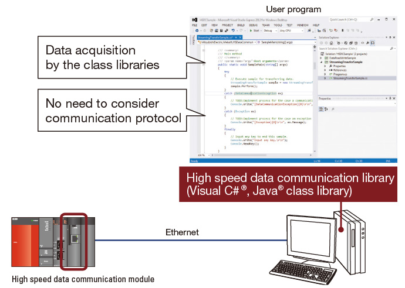
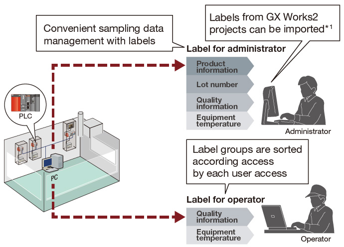

Pengendali Seri MELSEC-Q
Fitur Produk -Jaringan-

Komunikasi data berkecepatan tinggi
Mendukung produktivitas dan peningkatan nilai perangkat melalui transfer data kontrol secara real-time
Modul komunikasi data berkecepatan tinggi
Komunikasi dengan akurasi data tinggi dari pengontrol yang dapat diprogram ke komputer pribadi dapat dengan mudah diwujudkan dengan modul komunikasi data berkecepatan tinggi (QJ71DC96). Data dapat dialirkan dengan kecepatan tinggi ke komputer pribadi dengan melakukan sinkronisasi dengan siklus pemindaian pengontrol tanpa harus terus-menerus melakukan polling data seperti yang dicapai sebelumnya. Fitur ini mewujudkan peningkatan produktivitas dengan menghasilkan analisis data kontrol waktu nyata pada komputer pribadi.
Transfer data besar yang cepat dan andal secara waktu nyata
- Transfer volume data besar dalam periode pengambilan sampel yang sangat singkat dapat diwujudkan dengan fitur "Transfer streaming". Integritas data yang tinggi dapat dicapai dengan mudah melalui Ethernet TCP/IP ke server berbasis komputer pribadi.

Akuisisi data tanpa mempertimbangkan protokol
- Komunikasi antara modul dan komputer pribadi disediakan dalam bentuk pustaka kelas Visual C#® dan Java®. Pustaka kelas ini memungkinkan program komputer pribadi sederhana untuk memperoleh data dari pengontrol yang dapat diprogram tanpa mempertimbangkan protokol komunikasi.

Label untuk pengambilan sampel data yang efektif
- Pemberian label (penamaan) pada setiap data komputer pribadi membuat klasifikasi pemindahan data menjadi sederhana. Beberapa label dikelompokkan dan disortir sebagai kelompok label menurut peralatan atau pengguna. Kontrol akses kelompok label yang sesuai dengan tingkat pengguna juga dimungkinkan.

- *1.Perangkat lunak rekayasa GX Works2 Versi 1.44 W atau yang lebih baru diperlukan saat label global proyek GX Works2 diimpor ke Alat Konfigurasi modul ini.